| variable | min | max | mean | median | std. dev | IQR |
|---|---|---|---|---|---|---|
| Dani's grumpiness | 41 | 91 | 63.71 | 62 | 10.05 | 14 |
| Dani's hours slept | 4.84 | 9.00 | 6.97 | 7.03 | 1.02 | 1.45 |
| Dani's son's hours slept | 3.25 | 12.07 | 8.05 | 7.95 | 2.07 | 3.21 |
12 Correlation and linear regression
The goal in this chapter is to introduce correlation and linear regression. These are the standard tools that statisticians rely on when analysing the relationship between continuous predictors and continuous outcomes.
12.1 Correlations
In this section we’ll talk about how to describe the relationships between variables in the data. To do that, we want to talk mostly about the correlation between variables. But first, we need some data (Table 12.1).
12.1.1 The data
Let’s turn to a topic close to every parent’s heart: sleep. The data set we’ll use is fictitious, but based on real events. Suppose I’m curious to find out how much my infant son’s sleeping habits affect my mood. Let’s say that I can rate my grumpiness very precisely, on a scale from 0 (not at all grumpy) to \(100\) (grumpy as a very, very grumpy old man or woman). And lets also assume that I’ve been measuring my grumpiness, my sleeping patterns and my son’s sleeping patterns for quite some time now. Let’s say, for \(100\) days. And, being a nerd, I’ve saved the data as a file called parenthood.csv. If we load the data we can see that the file contains four variables dani.sleep, baby.sleep, dani.grump and day. Note that when you first load this data set jamovi may not have guessed the data type for each variable correctly, in which case you should fix it: dani.sleep, baby.sleep, dani.grump and day can be specified as continuous variables, and ID is a nominal(integer) variable.1
Next, I’ll take a look at some basic descriptive statistics and, to give a graphical depiction of what each of the three interesting variables looks like, Figure 12.1 plots histograms. One thing to note: just because jamovi can calculate dozens of different statistics doesn’t mean you should report all of them. If I were writing this up for a report, I’d probably pick out those statistics that are of most interest to me (and to my readership), and then put them into a nice, simple table like the one in Table 12.1.2 Notice that when I put it into a table, I gave everything “human readable” names. This is always good practice. Notice also that I’m not getting enough sleep. This isn’t good practice, but other parents tell me that it’s pretty standard.

12.1.2 The strength and direction of a relationship
We can draw scatterplots to give us a general sense of how closely related two variables are. Ideally though, we might want to say a bit more about it than that. For instance, let’s compare the relationship between baby.sleep and dani.grump (Figure 12.2 (a)), left, with that between dani.sleep and dani.grump (Figure 12.2 (b)), right. When looking at these two plots side by side, it’s clear that the relationship is qualitatively the same in both cases: more sleep equals less grump! However, it’s also pretty obvious that the relationship between dani.sleep and dani.grump is stronger than the relationship between baby.sleep and dani.grump. The plot on the right is “neater” than the one on the left. What it feels like is that if you want to predict what my mood is, it’d help you a little bit to know how many hours my son slept, but it’d be more helpful to know how many hours I slept.
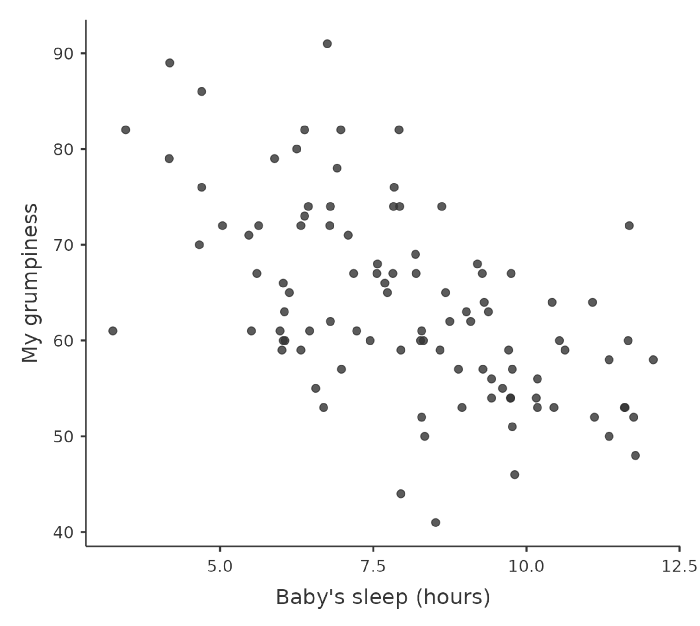

In contrast, let’s consider the two scatterplots shown in Figure 12.3. If we compare the scatterplot of “baby.sleep v dani.grump” (left) to the scatterplot of “baby.sleep v dani.sleep” (right), the overall strength of the relationship is the same, but the direction is different. That is, if my son sleeps more, I get more sleep (positive relationship, right-hand side), but if he sleeps more then I get less grumpy (negative relationship, left-hand side).

12.1.3 The correlation coefficient
We can make these ideas a bit more explicit by introducing the idea of a correlation coefficient (or, more specifically, Pearson’s correlation coefficient), which is traditionally denoted as r. The correlation coefficient between two variables \(X\) and \(Y\) (sometimes denoted \(r_{XY}\) ), which we’ll define more precisely in the next section, is a measure that varies from -1 to 1. When \(r = -1\) it means that we have a perfect negative relationship, and when \(r = 1\) it means we have a perfect positive relationship. When \(r = 0\), there’s no relationship at all. If you look at Figure 12.4, you can see several plots showing what different correlations look like.
[Additional technical detail3]
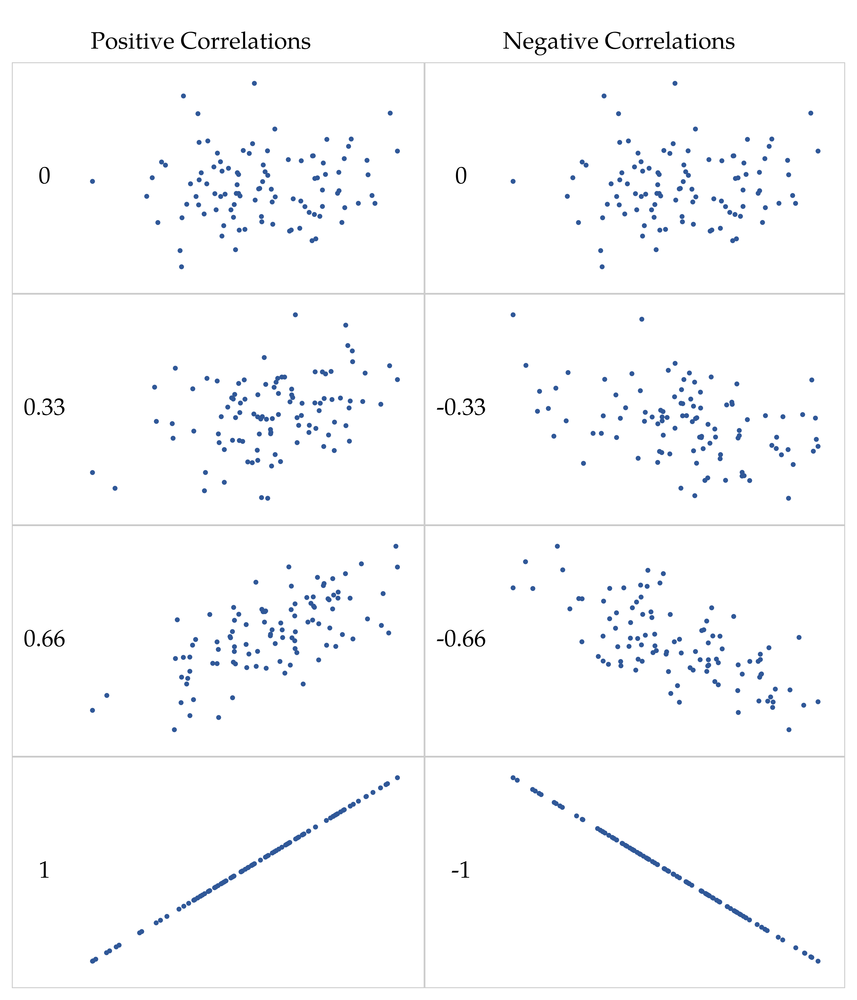
By standardising the covariance, not only do we keep all of the nice properties of the covariance discussed earlier, but the actual values of r are on a meaningful scale: r = 1 implies a perfect positive relationship and \(r = -1\) implies a perfect negative relationship. I’ll expand a little more on this point later, in the section on Interpreting a correlation. But before I do, let’s look at how to calculate correlations in jamovi.
12.1.4 Calculating correlations in jamovi
Calculating correlations in jamovi can be done by clicking on the ‘Regression’ – ‘Correlation Matrix’ button. Transfer all four continuous variables across into the box on the right to get the output in Figure 12.5.
12.1.5 Interpreting a correlation
Naturally, in real life you don’t see many correlations of \(1\). So how should you interpret a correlation of, say, r = \(.4\)? The honest answer is that it really depends on what you want to use the data for, and on how strong the correlations in your field tend to be. A friend of mine in engineering once argued that any correlation less than \(.95\) is completely useless (I think he was exaggerating, even for engineering). On the other hand, there are real cases, even in psychology, where you should really expect correlations that strong. For instance, one of the benchmark data sets used to test theories of how people judge similarities is so clean that any theory that can’t achieve a correlation of at least \(.9\) really isn’t deemed to be successful. However, when looking for (say) elementary correlates of intelligence (e.g., inspection time, response time), if you get a correlation above \(.3\) you’re doing very very well. In short, the interpretation of a correlation depends a lot on the context. That said, the rough guide in Table 12.2 is pretty typical.
| Correlation | Strength | Direction |
|---|---|---|
| -1.00 to -0.90 | Very strong | Negative |
| -0.90 to -0.70 | Strong | Negative |
| -0.70 to -0.40 | Moderate | Negative |
| -0.40 to -0.20 | Weak | Negative |
| -0.20 to 0.00 | Negligible | Negative |
| 0.00 to 0.20 | Negligible | Positive |
| 0.20 to 0.40 | Weak | Positive |
| 0.40 to 0.70 | Moderate | Positive |
| 0.70 to 0.90 | Strong | Positive |
| 0.90 to 1.00 | Very strong | Positive |
| Note that I say a rough guide. There aren't hard and fast rules for what counts as strong or weak relationships. It depends on the context | ||
However, something that can never be stressed enough is that you should always look at the scatterplot before attaching any interpretation to the data. A correlation might not mean what you think it means. The classic illustration of this is “Anscombe’s Quartet” (Anscombe, 1973), a collection of four data sets. Each data set has two variables, an \(X\) and a \(Y\). For all four data sets the mean value for \(X\) is \(9\) and the mean for \(Y\) is \(7.5\). The standard deviations for all \(X\) variables are almost identical, as are those for the Y variables. And in each case the correlation between \(X\) and \(Y\) is \(r = 0.816\). You can verify this yourself, since I happen to have saved it in a file called anscombe.csv.
You’d think that these four data sets would look pretty similar to one another. They do not. If we draw scatterplots of \(X\) against \(Y\) for all four variables, as shown in Figure 12.6, we see that all four of these are spectacularly different to each other. The lesson here, which so very many people seem to forget in real life, is “always graph your raw data” (see Chapter 5).
12.1.6 Spearman’s rank correlations
The Pearson correlation coefficient is pretty useful, but it does have shortcomings. One issue stands out: what it actually measures is the strength of the linear relationship between two variables. In other words, what it gives you is a measure of the extent to which the data all tend to fall on a single, perfectly straight line. Often, this is a pretty good approximation to what we mean when we say “relationship”, and so the Pearson correlation is a good thing to calculate. Sometimes though, it isn’t.
One very common situation where the Pearson correlation isn’t quite the right thing to use arises when an increase in one variable \(X\) really is reflected in an increase in another variable Y , but the nature of the relationship isn’t necessarily linear. An example of this might be the relationship between effort and reward when studying for an exam. If you put zero effort (\(X\)) into learning a subject then you should expect a grade of \(0\%\) (\(Y\)). However, a little bit of effort will cause a massive improvement. Just turning up to lectures means that you learn a fair bit, and if you just turn up to classes and scribble a few things down your grade might rise to 35%, all without a lot of effort. However, you just don’t get the same effect at the other end of the scale. As everyone knows, it takes a lot more effort to get a grade of \(90\%\) than it takes to get a grade of \(55\%\). What this means is that, if I’ve got data looking at study effort and grades, there’s a pretty good chance that Pearson correlations will be misleading.
To illustrate, consider the data plotted in Figure 12.7, showing the relationship between hours worked and grade received for 10 students taking some class. The curious thing about this (highly fictitious) data set is that increasing your effort always increases your grade. It might be by a lot or it might be by a little, but increasing effort will never decrease your grade. If we run a standard Pearson correlation, it shows a strong relationship between hours worked and grade received, with a correlation coefficient of \(0.91\). However, this doesn’t actually capture the observation that increasing hours worked always increases the grade. There’s a sense here in which we want to be able to say that the correlation is perfect but for a somewhat different notion of what a “relationship” is. What we’re looking for is something that captures the fact that there is a perfect ordinal relationship here. That is, if student 1 works more hours than student 2, then we can guarantee that student 1 will get the better grade. That’s not what a correlation of \(r = .91\) says at all.
How should we address this? Actually, it’s really easy. If we’re looking for ordinal relationships all we have to do is treat the data as if it were ordinal scale! So, instead of measuring effort in terms of “hours worked”, lets rank all \(10\) of our students in order of hours worked. That is, student \(1\) did the least work out of anyone (\(2\) hours) so they get the lowest rank (rank = \(1\)). Student \(4\) was the next laziest, putting in only \(6\) hours of work over the whole semester, so they get the next lowest rank (rank = \(2\)). Notice that I’m using “rank =1” to mean “low rank”. Sometimes in everyday language we talk about “rank = \(1\)” to mean “top rank” rather than “bottom rank”. So be careful, you can rank “from smallest value to largest value” (i.e., small equals rank \(1\)) or you can rank “from largest value to smallest value” (i.e., large equals rank 1). In this case, I’m ranking from smallest to largest, but as it’s really easy to forget which way you set things up you have to put a bit of effort into remembering!
Okay, so let’s have a look at our students when we rank them from worst to best in terms of effort and reward Table 12.3.
| rank (hours worked) | rank (grade received) | |
|---|---|---|
| student 1 | 1 | 1 |
| student 2 | 10 | 10 |
| student 3 | 6 | 6 |
| student 4 | 2 | 2 |
| student 5 | 3 | 3 |
| student 6 | 5 | 5 |
| student 7 | 4 | 4 |
| student 8 | 8 | 8 |
| student 9 | 7 | 7 |
| student 10 | 9 | 9 |
Hmm. These are identical. The student who put in the most effort got the best grade, the student with the least effort got the worst grade, etc. As the table above shows, these two rankings are identical, so if we now correlate them we get a perfect relationship, with a correlation of 1.0.
What we’ve just re-invented is Spearman’s rank order correlation, usually denoted \(\rho\) to distinguish it from the Pearson correlation r. We can calculate Spearman’s \(\rho\) using jamovi simply by clicking the ‘Spearman’ check box in the ‘Correlation Matrix’ screen.
12.2 Scatterplots
Scatterplots are a simple but effective tool for visualising the relationship between two variables, like we saw with the figures in the section on Correlations. It’s this latter application that we usually have in mind when we use the term “scatterplot”. In this kind of plot each observation corresponds to one dot. The horizontal location of the dot plots the value of the observation on one variable, and the vertical location displays its value on the other variable. In many situations you don’t really have a clear opinion about what the causal relationship is (e.g., does A cause B, or does B cause A, or does some other variable C control both A and B). If that’s the case, it doesn’t really matter which variable you plot on the x-axis and which one you plot on the y-axis. However, in many situations you do have a pretty strong idea which variable you think is most likely to be causal, or at least you have some suspicions in that direction. If so, then it’s conventional to plot the cause variable on the x-axis, and the effect variable on the y-axis. With that in mind, let’s look at how to draw scatterplots in jamovi, using the same parenthooddata set (i.e. parenthood.csv) that I used when introducing correlations.
Suppose my goal is to draw a scatterplot displaying the relationship between the amount of sleep that I get (dani.sleep) and how grumpy I am the next day (dani.grump). There are two different ways in which we can use jamovi to get the plot that we’re after. The first way is to use the ‘Plot’ option under the ‘Regression’ – ‘Correlation Matrix’ button, giving us the output shown in Figure 12.8. Note that jamovi draws a line through the points, we’ll come onto this a bit later in the section on What is a linear regression model?. Plotting a scatterplot in this way also allows you to specify ‘Densities for variables’ and this option adds a density curve showing how the data in each variable is distributed.
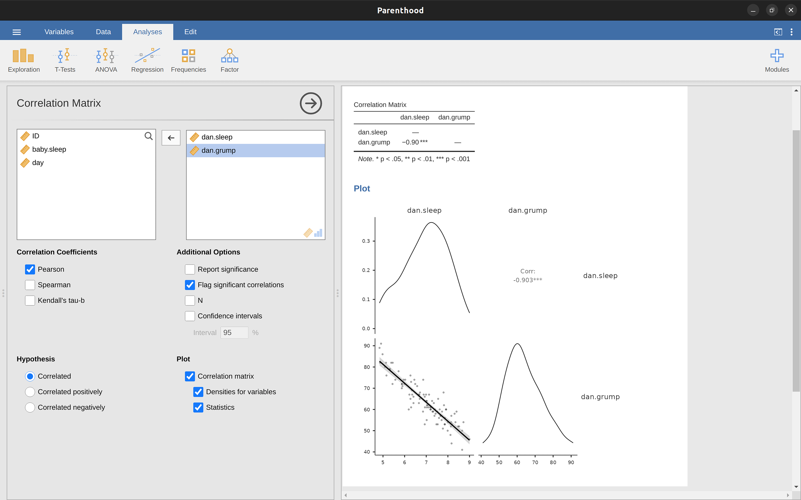
The second way do to it is to use one of the jamovi add-on modules. This module is called ‘scatr’ and you can install it by clicking on the large ‘\(+\)’ icon in the top right of the jamovi screen, opening the jamovi library, scrolling down until you find ‘scatr’ and clicking ‘install’. When you have done this, you will find a new ‘Scatterplot’ command available under the ‘Exploration’ button. This plot is a bit different than the first way, see Figure 12.9, but the important information is the same.
12.2.1 More elaborate options
Often you will want to look at the relationships between several variables at once, using a scatterplot matrix (in jamovi via the ‘Correlation Matrix’ – ‘Plot’ command). Just add another variable, for example baby.sleep to the list of variables to be correlated, and jamovi will create a scatterplot matrix for you, just like the one in Figure 12.10.
12.3 What is a linear regression model?
Stripped to its bare essentials, linear regression models are basically a slightly fancier version of the Pearson correlation (see Correlations), but they are actually much more powerful tools. We’ll return to the parenthood.csv file that we were using to illustrate how correlations work. Recall that, in this data set we were trying to find out why Dani is so very grumpy all the time and our working hypothesis was that I’m not getting enough sleep. We drew a scatterplots to help us examine the relationship between the amount of sleep I get and my grumpiness the following day, as in Figure 12.9, and as we saw that this corresponded to a correlation of \(r = -.90\), but what we find ourselves secretly imagining is something that looks closer to Figure 12.11(a). That is, we mentally draw a straight line through the middle of the data. In statistics, this line that we’re drawing is called a regression line. Notice that, since we’re not idiots, the regression line goes through the middle of the data. We don’t find ourselves imagining anything like the rather silly plot shown in Figure 12.11(b).

This is not highly surprising. The line that I’ve drawn in Figure 12.11(b) doesn’t “fit” the data very well, so it doesn’t make a lot of sense to propose it as a way of summarising the data, right? This is a very simple observation to make, but it turns out to be very powerful when we start trying to wrap just a little bit of maths around it. To do so, let’s start with a refresher of some high school maths. The formula for a straight line is usually written like this:
\[y=a+bx\]
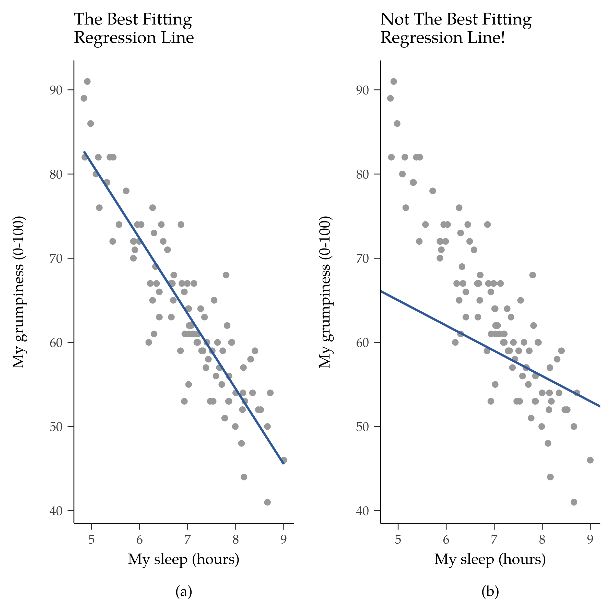
The two variables are \(x\) and \(y\), and we have two coefficients, \(a\) and \(b\).4 The coefficient \(a\) represents the y-intercept of the line, and coefficient \(b\) represents the slope of the line. The intercept is interpreted as “the value of y that you get when \(x = 0\)”. Similarly, a slope of b means that if you increase the x-value by 1 unit, then the y-value goes up by b units, and a negative slope means that the y-value would go down rather than up. We use the exact same formula for a regression line. If \(Y\) is the outcome variable (the DV) and \(X\) is the predictor variable (the \(IV\)), then the formula that describes our regression is written like this:
\[\hat{Y}_i=b_0+b_1X_i\]
Hmm. Looks like the same formula, but there’s some extra frilly bits in this version. Let’s make sure we understand them. Firstly, notice that I’ve written \(X_i\) and \(Y_i\) rather than just plain old \(X\) and \(Y\) . This is because we want to remember that we’re dealing with actual data. In this equation, \(X_i\) is the value of predictor variable for the ith observation (i.e., the number of hours of sleep that I got on day i of my little study), and \(Y_i\) is the corresponding value of the outcome variable (i.e., my grumpiness on that day). And although I haven’t said so explicitly in the equation, what we’re assuming is that this formula works for all observations in the data set (i.e., for all i). Secondly, notice that I wrote \(\hat{Y}_i\) and not \(Y_i\) . This is because we want to make the distinction between the actual data \(Y_i\), and the estimate \(\hat{Y}_i\) (i.e., the prediction that our regression line is making). Thirdly, I changed the letters used to describe the coefficients from a and \(b\) to \(b_0\) and \(b_1\). That’s just the way that statisticians like to refer to the coefficients in a regression model. I’ve no idea why they chose b, but that’s what they did. In any case \(b_0\) always refers to the intercept term, and \(b_1\) refers to the slope.
Excellent, excellent. Next, I can’t help but notice that, regardless of whether we’re talking about the good regression line or the bad one, the data don’t fall perfectly on the line. Or, to say it another way, the data \(Y_i\) are not identical to the predictions of the regression model \(\hat{Y}_i\). Since statisticians love to attach letters, names and numbers to everything, let’s refer to the difference between the model prediction and that actual data point as a residual, and we’ll refer to it as \(\epsilon_i\).5 Written using mathematics, the residuals are defined as
12.4 Estimating a linear regression model
Okay, now let’s redraw our pictures but this time I’ll add some lines to show the size of the residual for all observations. When the regression line is good, our residuals (the lengths of the solid black lines) all look pretty small, as shown in Figure 12.12(a), but when the regression line is a bad one the residuals are a lot larger, as you can see from looking at Figure 12.12(b). Hmm. Maybe what we “want” in a regression model is small residuals. Yes, that does seem to make sense. In fact, I think I’ll go so far as to say that the “best fitting” regression line is the one that has the smallest residuals. Or, better yet, since statisticians seem to like to take squares of everything why not say that:
The estimated regression coefficients, \(\hat{b}_0\) and \(\hat{b}_1\), are those that minimise the sum of the squared residuals, which we could either write as \(\sum_i (Y_i - \hat{Y}_i)^2\) or as \(\sum_i \epsilon_i^2\).
Yes, yes that sounds even better. And since I’ve indented it like that, it probably means that this is the right answer. And since this is the right answer, it’s probably worth making a note of the fact that our regression coefficients are estimates (we’re trying to guess the parameters that describe a population!), which is why I’ve added the little hats, so that we get \(\hat{b}_0\) and \(\hat{b}_1\) rather than \(b_0\) and \(b_1\). Finally, I should also note that, since there’s actually more than one way to estimate a regression model, the more technical name for this estimation process is ordinary least squares (OLS) regression.
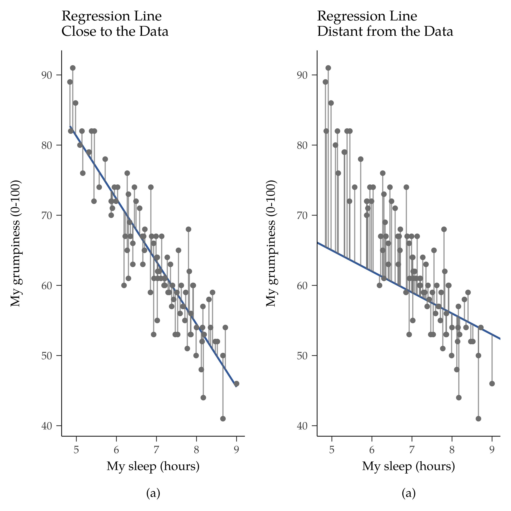
At this point, we now have a concrete definition for what counts as our “best” choice of regression coefficients, \(\hat{b}_0\) and \(\hat{b}_1\). The natural question to ask next is, if our optimal regression coefficients are those that minimise the sum squared residuals, how do we find these wonderful numbers? The actual answer to this question is complicated and doesn’t help you understand the logic of regression.6 This time I’m going to let you off the hook. Instead of showing you the long and tedious way first and then “revealing” the wonderful shortcut that jamovi provides, let’s cut straight to the chase and just use jamovi to do all the heavy lifting.
12.4.1 Linear regression in jamovi
To run my linear regression, open up the ‘Regression’ – ‘Linear Regression’ analysis in jamovi, using the parenthood.csv data file. Then specify dani.grump as the ‘Dependent Variable’ and dani.sleep as the variable entered in the ‘Covariates’ box. This gives the results shown in Figure 12.13, showing an intercept \(\hat{b}_0 = 125.96\) and the slope \(\hat{b}_1 = -8.94\). In other words, the best fitting regression line that I plotted in Figure 12.12 has this formula:
\[\hat{Y}_i=125.96+(-8.94 X_i)\]
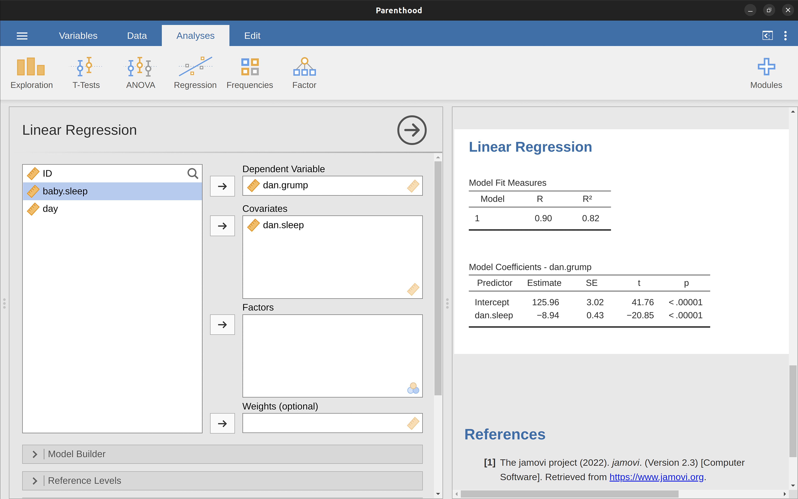
12.4.2 Interpreting the estimated model
The most important thing to be able to understand is how to interpret these coefficients. Let’s start with \(\hat{b}_1\), the slope. If we remember the definition of the slope, a regression coefficient of \(\hat{b}_1 = -8.94\) means that if I increase \(X_i\) by 1, then I’m decreasing \(Y_i\) by 8.94. That is, each additional hour of sleep that I gain will improve my mood, reducing my grumpiness by 8.94 grumpiness points. What about the intercept? Well, since \(\hat{b}_0\) corresponds to “the expected value of \(Y_i\) when \(X_i\) equals 0”, it’s pretty straightforward. It implies that if I get zero hours of sleep (\(X_i = 0\)) then my grumpiness will go off the scale, to an insane value of (\(Y_i = 125.96\)). Best to be avoided, I think.
12.5 Multiple linear regression
The simple linear regression model that we’ve discussed up to this point assumes that there’s a single predictor variable that you’re interested in, in this case dani.sleep. In fact, up to this point every statistical tool that we’ve talked about has assumed that your analysis uses one predictor variable and one outcome variable. However, in many (perhaps most) research projects you actually have multiple predictors that you want to examine. If so, it would be nice to be able to extend the linear regression framework to be able to include multiple predictors. Perhaps some kind of multiple regression model would be in order?
Multiple regression is conceptually very simple. All we do is add more terms to our regression equation. Let’s suppose that we’ve got two variables that we’re interested in; perhaps we want to use both dani.sleep and baby.sleep to predict the dani.grump variable. As before, we let \(Y_{i}\) refer to my grumpiness on the i-th day. But now we have two $ X $ variables: the first corresponding to the amount of sleep I got and the second corresponding to the amount of sleep my son got. So we’ll let \(X_{i1}\) refer to the hours I slept on the i-th day and \(X_{i2}\) refers to the hours that the baby slept on that day. If so, then we can write our regression model like this: \[Y_i=b_0+b_1X_{i1}+b_2X_{i2}+\epsilon_i\]
As before, \(\epsilon_i\) is the residual associated with the i-th observation, \(\epsilon_i = Y_i - \hat{Y}_i\). In this model, we now have three coefficients that need to be estimated: \(b_0\) is the intercept, \(b_1\) is the coefficient associated with my sleep, and \(b_2\) is the coefficient associated with my son’s sleep. However, although the number of coefficients that need to be estimated has changed, the basic idea of how the estimation works is unchanged: our estimated coefficients \(\hat{b}_0\), \(\hat{b}_1\) and \(\hat{b}_2\) are those that minimise the sum squared residuals.
12.5.1 Doing it in jamovi
Multiple regression in jamovi is no different to simple regression. All we have to do is add additional variables to the ‘Covariates’ box in jamovi. For example, if we want to use both dani.sleep and baby.sleep as predictors in our attempt to explain why I’m so grumpy, then move baby.sleep across into the ‘Covariates’ box alongside dani.sleep. By default, jamovi assumes that the model should include an intercept. The coefficients we get this time are shown in Table 12.4.
| (Intercept) | dani.sleep | baby.sleep |
|---|---|---|
| 125.97 | -8.95 | 0.01 |
The coefficient associated with dani.sleep is quite large, suggesting that every hour of sleep I lose makes me a lot grumpier. However, the coefficient for baby.sleep is very small, suggesting that it doesn’t really matter how much sleep my son gets. What matters as far as my grumpiness goes is how much sleep I get. To get a sense of what this multiple regression model looks like, Figure 12.14 shows a 3D plot that plots all three variables, along with the regression model itself.
[Additional technical detail7]
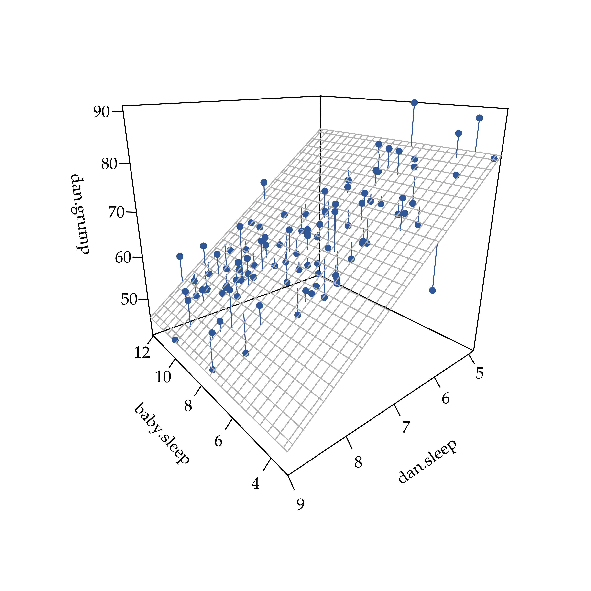
12.6 Quantifying the fit of the regression model
So we now know how to estimate the coefficients of a linear regression model. The problem is, we don’t yet know if this regression model is any good. For example, the regression.1 model claims that every hour of sleep will improve my mood by quite a lot, but it might just be rubbish. Remember, the regression model only produces a prediction \(\hat{Y}_i\) about what my mood is like, but my actual mood is \(Y_i\) . If these two are very close, then the regression model has done a good job. If they are very different, then it has done a bad job.
12.6.1 The \(R^2\) value
Once again, let’s wrap a little bit of mathematics around this. Firstly, we’ve got the sum of the squared residuals:
\[SS_{res}=\sum_i (Y_i-\hat{Y_i})^2\]
which we would hope to be pretty small. Specifically, what we’d like is for it to be very small in comparison to the total variability in the outcome variable:
\[SS_{tot}=\sum_i(Y_i-\bar{Y})^2\]
While we’re here, let’s calculate these values ourselves, not by hand though. Let’s use something like Excel or another standard spreadsheet programme. I have done this by opening up the parenthood.csv file in Excel and saving it as parenthood rsquared.xls so that I can work on it. The first thing to do is calculate the \(\hat{Y}\) values, and for the simple model that uses only a single predictor we would do the following:
- Create a new column called ’ Y.pred ’ using the formula ’ = 125.97 + (-8.94 \(\times\) dani.sleep) ’.
- Calculate the \(SS_{resid}\) by creating a new column called ’ (Y-Y.pred)^2 ’ using the formula ’ = (dani.grump - Y.pred)^2 ’.
- Then, at the bottom of this column calculate the sum of these values, i.e. ’ sum( ( Y-Y.pred)^2 ) ’.
- At the bottom of the dani.grump column, calculate the mean value for dani.grump (NB Excel uses the word ’ AVERAGE ’ rather than ’ mean ’ in its function).
- Then create a new column, called ’ (Y - mean(Y))^2 ) ’ using the formula ’ = (dani.grump - AVERAGE(dani.grump))^2 ’.
- Then, at the bottom of this column calculate the sum of these values, i.e. ‘sum( (Y - mean(Y))^2 )’.
- Calculate \(R^2\) by typing into a blank cell the following: ‘= 1 - (SS(resid) / SS(tot) )’.
This gives a value for \(R^2\) of ‘0.8161018’. The \(R^2\) value, sometimes called the coefficient of determination8 has a simple interpretation: it is the proportion of the variance in the outcome variable that can be accounted for by the predictor. So, in this case the fact that we have obtained \(R^2 = .816\) means that the predictor (my.sleep) explains \(81.6\%\) of the variance in the outcome (my.grump).
Naturally, you don’t actually need to type all these commands into Excel yourself if you want to obtain the \(R^2\) value for your regression model. As we’ll see later on in the section on Running the hypothesis tests in jamovi, all you need to do is specify this as an option in jamovi. However, let’s put that to one side for the moment. There’s another property of \(R^2\) that I want to point out.
12.6.2 The relationship between regression and correlation
At this point we can revisit my earlier claim that regression, in this very simple form that I’ve discussed so far, is basically the same thing as a correlation. Previously, we used the symbol \(r\) to denote a Pearson correlation. Might there be some relationship between the value of the correlation coefficient \(r\) and the \(R^2\) value from linear regression? Of course there is: the squared correlation \(r^2\) is identical to the \(R^2\) value for a linear regression with only a single predictor. In other words, running a Pearson correlation is more or less equivalent to running a linear regression model that uses only one predictor variable.
12.6.3 The adjusted \(R^2\) value
One final thing to point out before moving on. It’s quite common for people to report a slightly different measure of model performance, known as “adjusted \(R^2\)”. The motivation behind calculating the adjusted \(R^2\) value is the observation that adding more predictors into the model will always cause the \(R^2\) value to increase (or at least not decrease).
[Additional technical detail9]
This adjustment is an attempt to take the degrees of freedom into account. The big advantage of the adjusted \(R^2\) value is that when you add more predictors to the model, the adjusted \(R^2\) value will only increase if the new variables improve the model performance more than you’d expect by chance. The big disadvantage is that the adjusted \(R^2\) value can’t be interpreted in the elegant way that \(R^2\) can. \(R^2\) has a simple interpretation as the proportion of variance in the outcome variable that is explained by the regression model. To my knowledge, no equivalent interpretation exists for adjusted \(R^2\).
An obvious question then is whether you should report \(R^2\) or adjusted \(R^2\). This is probably a matter of personal preference. If you care more about interpretability, then \(R^2\) is better. If you care more about correcting for bias, then adjusted \(R^2\) is probably better. Speaking just for myself, I prefer \(R^2\). My feeling is that it’s more important to be able to interpret your measure of model performance. Besides, as we’ll see in Hypothesis tests for regression models, if you’re worried that the improvement in \(R^2\) that you get by adding a predictor is just due to chance and not because it’s a better model, well we’ve got hypothesis tests for that.
12.7 Hypothesis tests for regression models
So far we’ve talked about what a regression model is, how the coefficients of a regression model are estimated, and how we quantify the performance of the model (the last of these, incidentally, is basically our measure of effect size). The next thing we need to talk about is hypothesis tests. There are two different (but related) kinds of hypothesis tests that we need to talk about: those in which we test whether the regression model as a whole is performing significantly better than a null model, and those in which we test whether a particular regression coefficient is significantly different from zero.
12.7.1 Testing the model as a whole
Okay, suppose you’ve estimated your regression model. The first hypothesis test you might try is the null hypothesis that there is no relationship between the predictors and the outcome, and the alternative hypothesis that the data are distributed in exactly the way that the regression model predicts.
[Additional technical detail10]
We’ll see much more of the \(F\)-statistic in Chapter 13, but for now just know that we can interpret large \(F\)-values as indicating that the null hypothesis is performing poorly in comparison to the alternative hypothesis. In a moment I’ll show you how to do the test in jamovi the easy way, but first let’s have a look at the tests for the individual regression coefficients.
12.7.2 Tests for individual coefficients
The \(F\)-test that we’ve just introduced is useful for checking that the model as a whole is performing better than chance. If your regression model doesn’t produce a significant result for the \(F\)-test then you probably don’t have a very good regression model (or, quite possibly, you don’t have very good data). However, while failing this test is a pretty strong indicator that the model has problems, passing the test (i.e., rejecting the null) doesn’t imply that the model is good! Why is that, you might be wondering? The answer to that can be found by looking at the coefficients for the Multiple linear regression model we have already looked at (Table 12.4)
I can’t help but notice that the estimated regression coefficient for the baby.sleep variable is tiny (\(0.01\)), relative to the value that we get for dani.sleep (\(-8.95\)). Given that these two variables are absolutely on the same scale (they’re both measured in “hours slept”), I find this illuminating. In fact, I’m beginning to suspect that it’s really only the amount of sleep that I get that matters in order to predict my grumpiness. We can re-use a hypothesis test that we discussed earlier, the \(t\)-test. The test that we’re interested in has a null hypothesis that the true regression coefficient is zero (\(b = 0\)), which is to be tested against the alternative hypothesis that it isn’t (\(b \neq 0\)). That is:
\[H_0:b=0\] \[H_1:b \neq 0\]
How can we test this? Well, if the central limit theorem is kind to us we might be able to guess that the sampling distribution of \(\hat{b}\), the estimated regression coefficient, is a normal distribution with mean centred on \(b\). What that would mean is that if the null hypothesis were true, then the sampling distribution of \(\hat{b}\) has mean zero and unknown standard deviation. Assuming that we can come up with a good estimate for the standard error of the regression coefficient, \(se(\hat{b})\), then we’re in luck. That’s exactly the situation for which we introduced the one-sample \(t\)-test back in Chapter 11. So let’s define a \(t\)-statistic like this:
\[t=\frac{\hat{b}}{SE(\hat{b})}\]
I’ll skip over the reasons why, but our degrees of freedom in this case are \(df = N - K - 1\). Irritatingly, the estimate of the standard error of the regression coefficient, \(se(\hat{b})\), is not as easy to calculate as the standard error of the mean that we used for the simpler \(t\)-tests in Chapter 11. In fact, the formula is somewhat ugly, and not terribly helpful to look at.11 For our purposes it’s sufficient to point out that the standard error of the estimated regression coefficient depends on both the predictor and outcome variables, and it is somewhat sensitive to violations of the homogeneity of variance assumption (discussed shortly).
In any case, this \(t\)-statistic can be interpreted in the same way as the \(t\)-statistics that we discussed in Chapter 11. Assuming that you have a two-sided alternative (i.e., you don’t really care if b \(>\) 0 or b \(<\) 0), then it’s the extreme values of t (i.e., a lot less than zero or a lot greater than zero) that suggest that you should reject the null hypothesis.
12.7.3 Running the hypothesis tests in jamovi
To compute all of the statistics that we have talked about so far, all you need to do is make sure the relevant options are checked in jamovi and then run the regression. If we do that, as in Figure 12.15, we get a whole bunch of useful output.
The ‘Model Coefficients’ at the bottom of the jamovi analysis results shown in Figure 12.15 provides the coefficients of the regression model. Each row in this table refers to one of the coefficients in the regression model. The first row is the intercept term, and the later ones look at each of the predictors. The columns give you all of the relevant information. The first column is the actual estimate of \(b\) (e.g., \(125.97\) for the intercept, and -8.95 for the dani.sleep predictor). The second column is the standard error estimate \(\hat{\sigma}_b\). The third and fourth columns provide the lower and upper values for the 95% confidence interval around the \(b\) estimate (more on this later). The fifth column gives you the \(t\)-statistic, and it’s worth noticing that in this table \(t=\frac{\hat{b}} {se({\hat{b}})}\) every time. Finally, the last column gives you the actual \(p\)-value for each of these tests.12
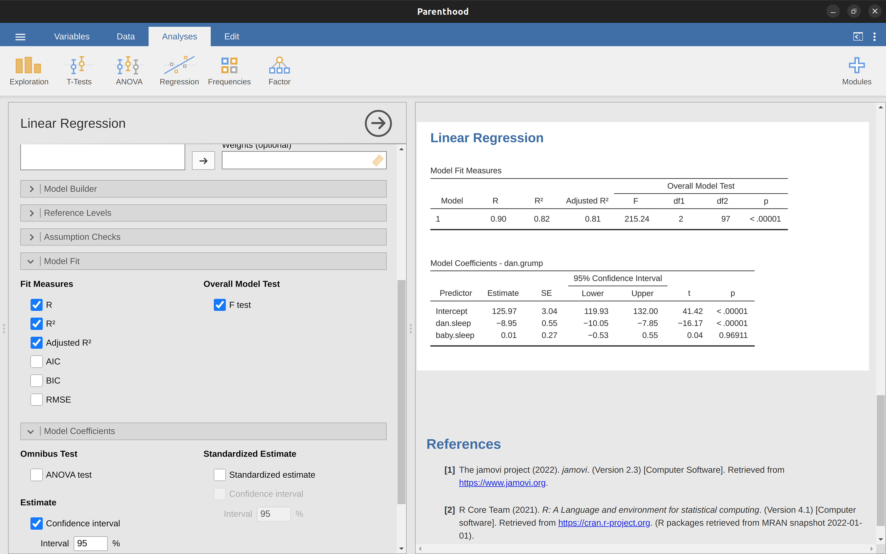
The only thing that the coefficients table itself doesn’t list is the degrees of freedom used in the \(t\)-test, which is always \(N - K - 1\) and is listed in the table at the top of the output, labelled ‘Model Fit Measures’. We can see from this table that the model performs significantly better than you’d expect by chance (\(F(2,97) = 215.24, p< .001\)), which isn’t all that surprising: the \(R^2 = .81\) value indicate that the regression model accounts for \(81\%\) of the variability in the outcome measure (and \(82\%\) for the adjusted \(R^2\) ). However, when we look back up at the \(t\)-tests for each of the individual coefficients, we have pretty strong evidence that the baby.sleep variable has no significant effect. All the work in this model is being done by the dani.sleep variable. Taken together, these results suggest that this regression model is actually the wrong model for the data. You’d probably be better off dropping the baby.sleep predictor entirely. In other words, the simple regression model that we started with is the better model.
12.8 Regarding regression coefficients
Before moving on to discuss the assumptions underlying linear regression and what you can do to check if they’re being met, there’s two more topics I want to briefly discuss, both of which relate to the regression coefficients. The first thing to talk about is calculating confidence intervals for the coefficients. After that, I’ll discuss the somewhat murky question of how to determine which predictor is most important.
12.8.1 Confidence intervals for the coefficients
Like any population parameter, the regression coefficients \(b\) cannot be estimated with complete precision from a sample of data; that’s part of why we need hypothesis tests. Given this, it’s quite useful to be able to report confidence intervals that capture our uncertainty about the true value of \(b\). This is especially useful when the research question focuses heavily on an attempt to find out how strongly variable \(X\) is related to variable \(Y\), since in those situations the interest is primarily in the regression weight \(b\).
[Additional technical detail13]
In jamovi we had already specified the ‘95% Confidence interval’ as shown in Figure 12.15, although we could easily have chosen another value, say a ‘99% Confidence interval’ if that is what we decided on.
12.8.2 Calculating standardised regression coefficients
One more thing that you might want to do is to calculate “standardised” regression coefficients, often denoted \(\beta\). The rationale behind standardised coefficients goes like this. In a lot of situations, your variables are on fundamentally different scales. Suppose, for example, my regression model aims to predict people’s \(IQ\) scores using their educational attainment (number of years of education) and their income as predictors. Obviously, educational attainment and income are not on the same scales. The number of years of schooling might only vary by 10s of years, whereas income can vary by 10,000s of dollars (or more). The units of measurement have a big influence on the regression coefficients. The \(b\) coefficients only make sense when interpreted in light of the units, both of the predictor variables and the outcome variable. This makes it very difficult to compare the coefficients of different predictors. Yet there are situations where you really do want to make comparisons between different coefficients. Specifically, you might want some kind of standard measure of which predictors have the strongest relationship to the outcome. This is what standardised coefficients aim to do.
The basic idea is quite simple; the standardised coefficients are the coefficients that you would have obtained if you’d converted all the variables to z-scores before running the regression.14 The idea here is that, by converting all the predictors to z-scores, they all go into the regression on the same scale, thereby removing the problem of having variables on different scales. Regardless of what the original variables were, a \(\beta\) value of 1 means that an increase in the predictor of 1 standard deviation will produce a corresponding 1 standard deviation increase in the outcome variable. Therefore, if variable \(A\) has a larger absolute value of \(\beta\) than variable \(B\), it is deemed to have a stronger relationship with the outcome. Or at least that’s the idea. It’s worth being a little cautious here, since this does rely very heavily on the assumption that “a 1 standard deviation change” is fundamentally the same kind of thing for all variables. It’s not always obvious that this is true.
[Additional technical detail15]
To make things even simpler, jamovi has an option that computes the \(\beta\) coefficients for you using the ‘Standardized estimate’ checkbox in the ‘Model Coefficients’ options, see results in Figure 12.16.
These results clearly show that the dani.sleep variable has a much stronger effect than the baby.sleep variable. However, this is a perfect example of a situation where it would probably make sense to use the original coefficients b rather than the standardised coefficients \(\beta\). After all, my sleep and the baby’s sleep are already on the same scale: number of hours slept. Why complicate matters by converting these to z-scores?
12.9 Assumptions of regression
The linear regression model that I’ve been discussing relies on several assumptions. In Model checking we’ll talk a lot more about how to check that these assumptions are being met, but first let’s have a look at each of them.
- Linearity. A pretty fundamental assumption of the linear regression model is that the relationship between \(X\) and \(Y\) actually is linear! Regardless of whether it’s a simple regression or a multiple regression, we assume that the relationships involved are linear.
- Independence: residuals are independent of each other. This is really just a “catch all” assumption, to the effect that “there’s nothing else funny going on in the residuals”. If there is something weird (e.g., the residuals all depend heavily on some other unmeasured variable) going on, it might screw things up. Independence isn’t something that you can check directly and specifically with diagnostic tools, but if your regression diagnostics are messed up then think carefully about the independence of your observations and residuals.
- Normality. Like many of the models in statistics, basic simple or multiple linear regression relies on an assumption of normality. Specifically, it assumes that the residuals are normally distributed. It’s actually okay if the predictors \(X\) and the outcome \(Y\) variables are non-normal, so long as the residuals \(\epsilon\) are normal. See the Checking the normality of the residuals section.
- Equality (or “homogeneity”) of variance. Strictly speaking, the regression model assumes that each residual \(\epsilon_i\) is generated from a normal distribution with mean 0, and (more importantly for the current purposes) with a standard deviation \(\sigma\) that is the same for every single residual. In practice, it’s impossible to test the assumption that every residual is identically distributed. Instead, what we care about is that the standard deviation of the residual is the same for all values of \(\hat{Y}\), and (if we’re being especially diligent) all values of every predictor \(X\) in the model.
So, we have four main assumptions for linear regression (that neatly form the acronym LINE). And there are also a couple of other things we should also check for:
- Uncorrelated predictors. The idea here is that, in a multiple regression model, you don’t want your predictors to be too strongly correlated with each other. This isn’t “technically” an assumption of the regression model, but in practice it’s required. Predictors that are too strongly correlated with each other (referred to as “collinearity”) can cause problems when evaluating the model. See Checking for collinearity section.
- No “bad” outliers. Again, not actually a technical assumption of the model (or rather, it’s sort of implied by all the others), but there is an implicit assumption that your regression model isn’t being too strongly influenced by one or two anomalous data points because this raises questions about the adequacy of the model and the trustworthiness of the data in some cases. See the section on Outliers and anomalous data.
12.10 Model checking
The main focus of this section is regression diagnostics, a term that refers to the art of checking that the assumptions of your regression model have been met, figuring out how to fix the model if the assumptions are violated, and generally to check that nothing “funny” is going on. I refer to this as the “art” of model checking with good reason. It’s not easy, and while there are a lot of easily available tools that you can use to diagnose and maybe even cure the problems that affect your model (if there are any, that is!), you really do need to exercise a certain amount of judgement when doing this.
In this section I describe several different things you can do to check that your regression model is doing what it’s supposed to. It doesn’t cover the full space of things you could do, but it’s still much more detailed than what is often done in practice – unfortunately! But it’s important that you get a sense of what tools are at your disposal, so I’ll try to introduce a bunch of them here. Finally, I should note that this section draws quite heavily from Fox & Weisberg (2011), the book associated with the “car” package that is used to conduct regression analysis in \(R\). The “car” package is notable for providing some excellent tools for regression diagnostics, and the book itself talks about them in an admirably clear fashion. I don’t want to sound too gushy about it, but I do think that Fox & Weisberg (2011) is well worth reading, even if some of the advanced diagnostic techniques are only available in “R” and not jamovi.
12.10.1 Three kinds of residuals
The majority of regression diagnostics revolve around looking at the residuals, and there are several different kinds of residual that we might consider. In particular, the following three kinds of residuals are referred to in this section: “ordinary residuals”, “standardised residuals”, and “Studentised residuals”. There is a fourth kind that you’ll see referred to in some of the Figures, and that’s the “Pearson residual”. However, for the models that we’re talking about in this chapter the Pearson residual is identical to the ordinary residual.
The first and simplest kind of residuals that we care about are ordinary residuals. These are the actual raw residuals that I’ve been talking about throughout this chapter so far. The ordinary residual is just the difference between the predicted value \(\hat{Y}_i\) and the observed value \(Y_i\). I’ve been using the notation \(\epsilon_i\) to refer to the i-th ordinary residual and so, with this in mind, we have the very simple equation: \[\epsilon_i=Y_i-\hat{Y_i}\]
This is of course what we saw earlier, and unless I specifically refer to some other kind of residual, this is the one I’m talking about. So there’s nothing new here. I just wanted to repeat myself. One drawback to using ordinary residuals is that they’re always on a different scale, depending on what the outcome variable is and how good the regression model is. That is, unless you’ve decided to run a regression model without an intercept term, the ordinary residuals will have mean 0 but the variance is different for every regression. In a lot of contexts, especially where you’re only interested in the pattern of the residuals and not their actual values, it’s convenient to estimate the standardised residuals, which are normalised in such a way as to have a standard deviation of 1.
[Additional technical detail16]
The third kind of residuals are Studentised residuals (also called “jackknifed residuals”) and they’re even fancier than standardised residuals. Again, the idea is to take the ordinary residual and divide it by some quantity in order to estimate some standardised notion of the residual.17
Before moving on, I should point out that you don’t often need to obtain these residuals yourself, even though they are at the heart of almost all regression diagnostics. Most of the time the various options that provide the diagnostics, or assumption checks, will take care of these calculations for you. Even so, it’s always nice to know how to actually get hold of these things yourself in case you ever need to do something non-standard.
12.10.2 Checking the linearity of the relationship
We should check for the linearity of the relationships between the predictors and the outcomes. There’s a few different things that you might want to do in order to check this. Firstly, it never hurts to just plot the relationship between the predicted values \(\hat{Y}_i\) and the observed values \(Y_i\) for the outcome variable, as illustrated in Figure 12.17. To draw this in jamovi we saved the predicted values to the data set, and then drew a scatterplot of the observed against the predicted (fitted) values. This gives you a kind of “big picture view” – if this plot looks approximately linear, then we’re probably not doing too badly (though that’s not to say that there aren’t problems). However, if you can see big departures from linearity here, then it strongly suggests that you need to make some changes.

In any case, in order to get a more detailed picture it’s often more informative to look at the relationship between the predicted values and the residuals themselves. Again, in jamovi you can save the residuals to the data set and then draw a scatterplot of the predicted values against the residual values, as in Figure 12.18. As you can see, not only does it draw the scatterplot showing the predicted value against the residuals, you can also plot a line through the data that shows the relationship between the two. Ideally, this should be a straight, perfectly horizontal line. In practice, we’re looking for a reasonably straight or flat line. This is a matter of judgement.
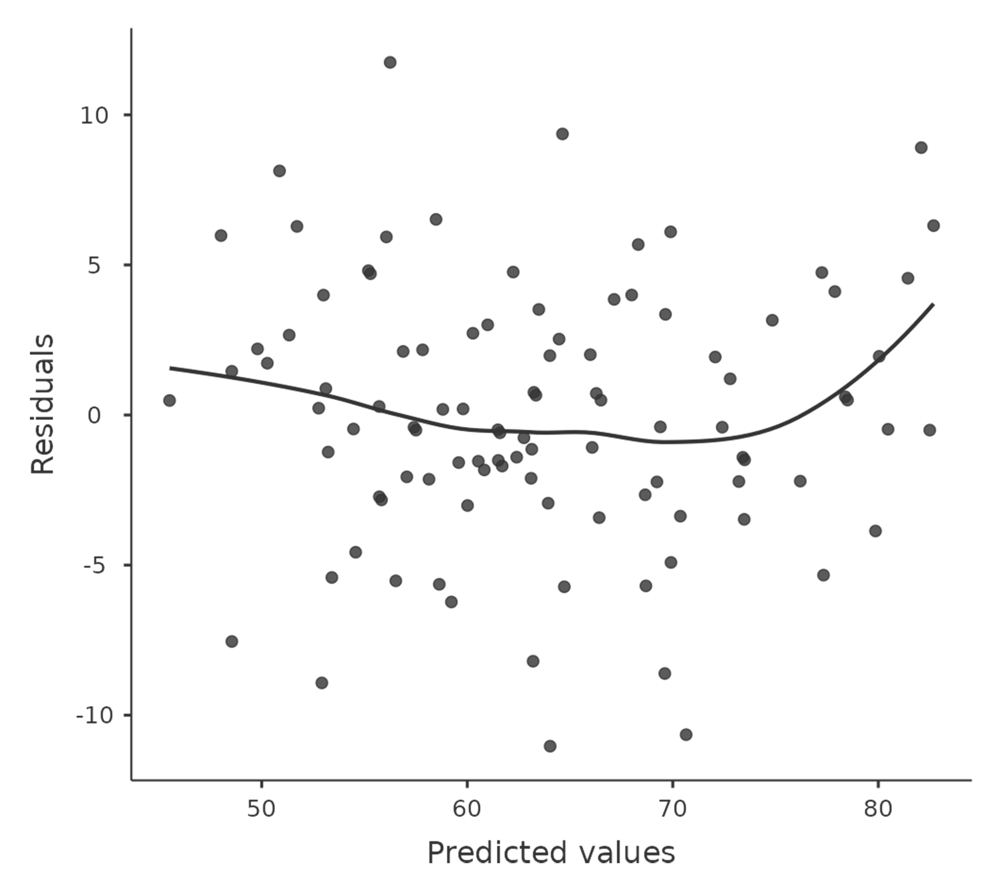
More advanced versions of the same plot are produced by checking ‘Residuals plots’ in the regression analysis ‘Assumption checks’ options in jamovi. These are useful for checking linearity, normality and equality of variance assumptions, and we look at these in more detail in Section 12.10.3. This option not only draws plots comparing the predicted values to the residuals, it does so for each individual predictor.
12.10.3 Checking the normality of the residuals
Like many of the statistical tools we’ve discussed in this book, regression models rely on a normality assumption. In this case, we assume that the residuals are normally distributed. The first thing we can do is draw a QQ-plot via the ‘Assumption Checks’ – ‘Assumption Checks’ – ‘Q-Q plot of residuals’ option. The output is shown in Figure 12.19, showing the standardised residuals plotted as a function of their theoretical quantiles according to the regression model.
Another thing we should check is the relationship between the predicted (fitted) values and the residuals themselves. We can get jamovi to do this using the ‘Residuals Plots’ option, which provides a scatterplot for each predictor variable, the outcome variable, and the predicted values against residuals, see Figure 12.20. In these plots we are looking for a fairly uniform distribution of dots, with no clear bunching or patterning of the dots. Looking at these plots, there is nothing particularly worrying as the dots are fairly evenly spread across the whole plot. There may be a little bit of non-uniformity in plot (b), but it is not a strong deviation and probably not worth worrying about.

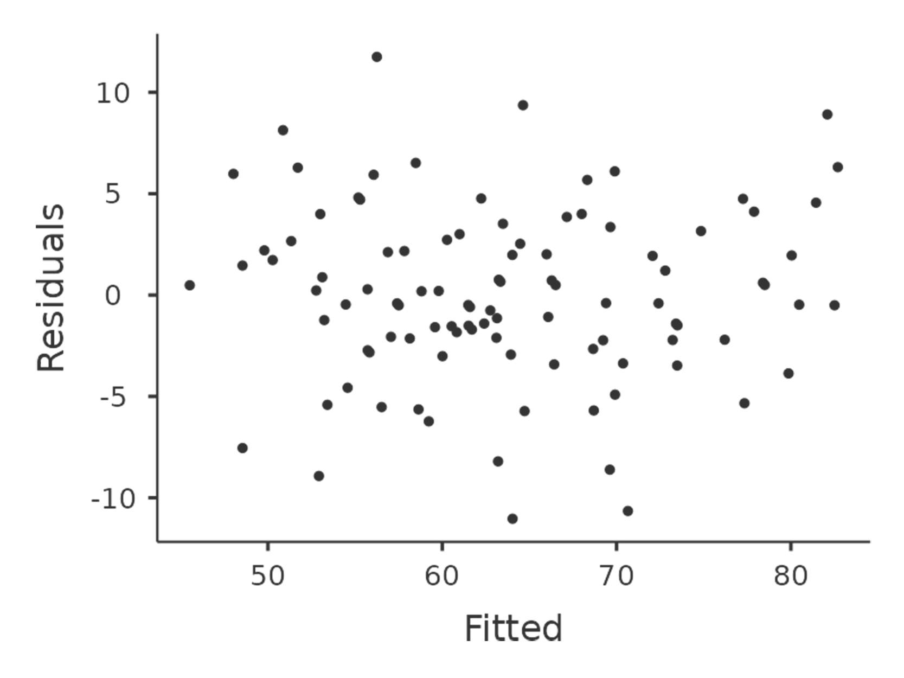 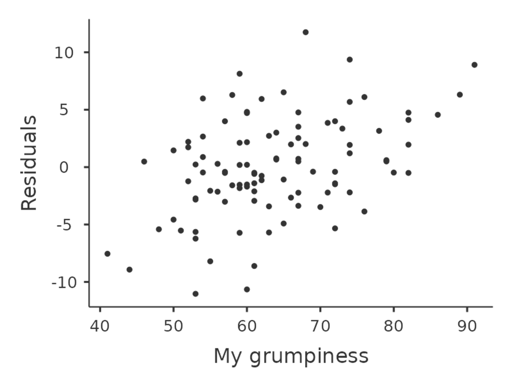
If we were worried, then in a lot of cases the solution to this problem (and many others) is to transform one or more of the variables. We discussed the basics of variable transformation in Section 6.3, but I do want to make special note of one additional possibility that I didn’t explain fully earlier: the Box-Cox transform. The Box-Cox function is a fairly simple one and it’s very widely used.18
You can calculate it using the BOXCOX function in the ‘Compute’ variables screen in jamovi.
12.10.4 Checking equality of variance
The regression models that we’ve talked about all make an equality (i.e.homogeneity) of variance assumption: the variance of the residuals is assumed to be constant. To plot this in jamovi first we need to calculate the square root of the (absolute) size of the residual19 and then plot this against the predicted values, as in Figure 12.21. Note that this plot actually uses the standardised residuals rather than the raw ones, but it’s immaterial from our point of view. What we’re looking to see here is a straight, horizontal line running through the middle of the plot.20

12.10.5 Checking for collinearity
Another regression diagnostic is provided by variance inflation factors (VIFs), which are useful for determining whether or not the predictors in your regression model are too highly correlated with each other. There is a variance inflation factor associated with each predictor \(X_k\) in the model.21
If you’ve only got two predictors, the VIF values are always going to be the same, as we can see if we click on the ‘Collinearity’ checkbox in the ‘Regression’ – ‘Assumptions’ options in jamovi. For both dani.sleep and baby.sleep the VIF is \(1.65\). And since the square root of \(1.65\) is \(1.28\), we see that the correlation between our two predictors isn’t causing much of a problem.
To give a sense of how we could end up with a model that has bigger collinearity problems, suppose I were to run a much less interesting regression model, in which I tried to predict the day on which the data were collected, as a function of all the other variables in the data set. To see why this would be a bit of a problem, let’s have a look at the correlation matrix for all four variables (Figure 12.22).

We have some fairly large correlations between some of our predictor variables! When we run the regression model and look at the VIF values, we see that the collinearity is causing a lot of uncertainty about the coefficients. First, run the regression, as in Figure 12.23 and you can see from the VIF values that, yep, that’s some mighty fine collinearity there.

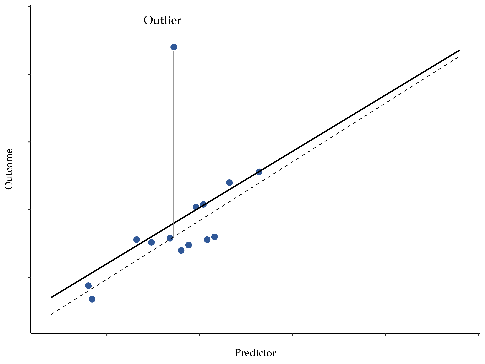
12.10.6 Outliers and anomalous data
One danger that you can run into with linear regression models is that your analysis might be disproportionately sensitive to a smallish number of “unusual” or “anomalous” observations. I discussed this idea previously in Section 5.2.3 in the context of discussing the outliers that get automatically identified by the boxplot option under ‘Exploration’ – ‘Descriptives’, but this time we need to be much more precise. In the context of linear regression, there are three conceptually distinct ways in which an observation might be called “anomalous”. All three are interesting, but they have rather different implications for your analysis.
The first kind of unusual observation is an outlier. The definition of an outlier (in this context) is an observation that is very different from what the regression model predicts. An example is shown in Figure 12.24, the outlier has an unusual value on the outcome (y-axis location), but not the predictor (x-axis location) and lies a long way from the regression line. In practice, we operationalise this concept by saying that an outlier is an observation that has a very large residual, \(\epsilon_i^*\). Also see the lower left plot of Anscombe’s quartet, Figure 12.6.
Outliers are interesting: a big outlier might correspond to junk data, e.g., the variables might have been recorded incorrectly in the data set, or some other defect may be detectable. Note that you shouldn’t throw an observation away just because it’s an outlier. But the fact that it’s an outlier is often a cue to look more closely at that case and try to find out why it’s so different.
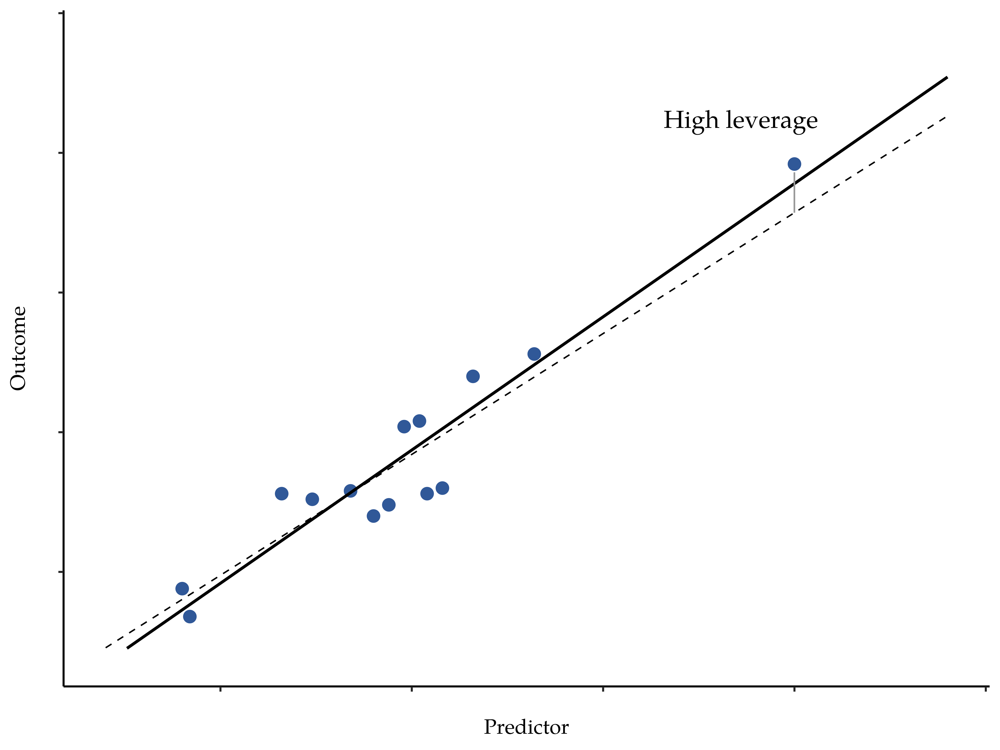
The second way in which an observation can be unusual is if it has high leverage, which happens when the observation is very different from all the other observations. This doesn’t necessarily have to correspond to a large residual. If the observation happens to be unusual on all variables in precisely the same way, it can actually lie very close to the regression line. An example of this is shown in Figure 12.25. The leverage of an observation is operationalised in terms of its hat value, usually written \(h_i\). The formula for the hat value is rather complicated22 but its interpretation is not: \(h_i\) is a measure of the extent to which the i-th observation is “in control” of where the regression line ends up going.
In general, if an observation lies far away from the other ones in terms of the predictor variables, it will have a large hat value (as a rough guide, high leverage is when the hat value is more than 2-3 times the average; and note that the sum of the hat values is constrained to be equal to \(K + 1\)). High leverage points are also worth looking at in more detail, but they’re much less likely to be a cause for concern unless they are also outliers.
This brings us to our third measure of unusualness, the influence of an observation. A high influence observation is an outlier that has high leverage. That is, it is an observation that is very different to all the other ones in some respect, and also lies a long way from the regression line. This is illustrated in Figure 12.26. Notice the contrast to the previous two figures. Outliers don’t move the regression line much and neither do high leverage points. But something that is both an outlier and has high leverage, well that has a big effect on the regression line. That’s why we call these points high influence, and it’s why they’re the biggest worry. We operationalise influence in terms of a measure known as Cook’s distance.23
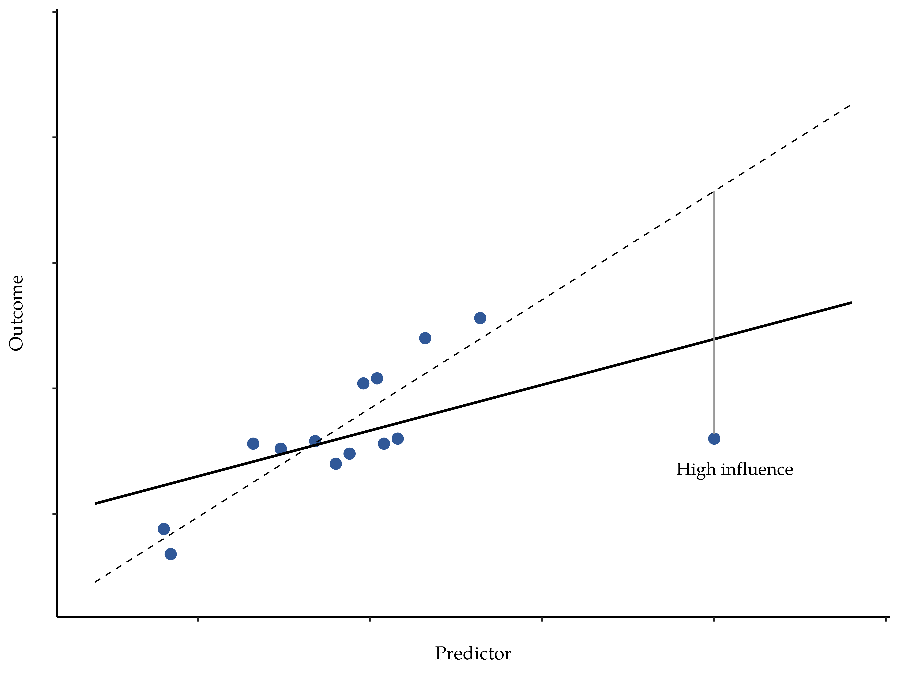
In order to have a large Cook’s distance an observation must be a fairly substantial outlier and have high leverage. As a rough guide, Cook’s distance greater than 1 is often considered large (that’s what I typically use as a quick and dirty rule).
In jamovi, information about Cook’s distance can be calculated by clicking on the ‘Cook’s Distance’ checkbox in the ‘Assumption Checks’ – ‘Data Summary’ options. When you do this, for the multiple regression model we have been using as an example in this chapter, you get the results as shown in Figure 12.27.

You can see that, in this example, the mean Cook’s distance value is \(0.01\), and the range is from \(0.00\) to \(0.11\), so this is some way off the rule of thumb figure mentioned above that a Cook’s distance greater than 1 is considered large.
An obvious question to ask next is, if you do have large values of Cook’s distance what should you do? As always, there’s no hard and fast rule. Probably the first thing to do is to try running the regression with the outlier with the greatest Cook’s distance24 excluded and see what happens to the model performance and to the regression coefficients. If they really are substantially different, it’s time to start digging into your data set and your notes that you no doubt were scribbling as your ran your study. Try to figure out why the point is so different. If you start to become convinced that this one data point is badly distorting your results then you might consider excluding it, but that’s less than ideal unless you have a solid explanation for why this particular case is qualitatively different from the others and therefore deserves to be handled separately.
12.11 Model selection
One fairly major problem that remains is the problem of “model selection”. That is, if we have a data set that contains several variables, which ones should we include as predictors, and which ones should we not include? In other words, we have a problem of variable selection. In general, model selection is a complex business but it’s made somewhat simpler if we restrict ourselves to the problem of choosing a subset of the variables that ought to be included in the model. Nevertheless, I’m not going to try covering even this reduced topic in a lot of detail. Instead, I’ll talk about two broad principles that you need to think about, and then discuss one concrete tool that jamovi provides to help you select a subset of variables to include in your model. First, the two principles:
It’s nice to have an actual substantive basis for your choices. That is, in a lot of situations you the researcher have good reasons to pick out a smallish number of possible regression models that are of theoretical interest. These models will have a sensible interpretation in the context of your field. Never discount the importance of this. Statistics serves the scientific process, not the other way around.
To the extent that your choices rely on statistical inference, there is a trade off between simplicity and goodness of fit. As you add more predictors to the model you make it more complex. Each predictor adds a new free parameter (i.e., a new regression coefficient), and each new parameter increases the model’s capacity to “absorb” random variations. So the goodness of fit (e.g., \(R^2\)) continues to rise, sometimes trivially or by chance, as you add more predictors no matter what. If you want your model to be able to generalise well to new observations you need to avoid throwing in too many variables.
This latter principle is often referred to as Ockham’s razor and is often summarised in terms of the following pithy saying: do not multiply entities beyond necessity. In this context, it means don’t chuck in a bunch of largely irrelevant predictors just to boost your \(R^2\). Hmm. Yeah, the original was better.
In any case, what we need is an actual mathematical criterion that will implement the qualitative principle behind Ockham’s razor in the context of selecting a regression model. As it turns out there are several possibilities. The one that I’ll talk about is the Akaike information criterion (AIC) (Akaike, 1974) simply because it’s available as an option in jamovi.25
The smaller the AIC value, the better the model performance. If we ignore the low level details it’s fairly obvious what the AIC does. On the left we have a term that increases as the model predictions get worse; on the right we have a term that increases as the model complexity increases. The best model is the one that fits the data well (low residuals, left-hand side) using as few predictors as possible (low K, right-hand side). In short, this is a simple implementation of Ockham’s razor.
AIC can be added to the ‘Model Fit Measures’ output Table when the ‘AIC’ checkbox is clicked, and a rather clunky way of assessing different models is seeing if the AIC value is lower if you remove one or more of the predictors in the regression model. This is the only way currently implemented in jamovi, but there are alternatives in other more powerful programmes, such as R. These alternative methods can automate the process of selectively removing (or adding) predictor variables to find the best AIC. Although these methods are not implemented in jamovi, I will mention them briefly below just so you know about them.
12.11.1 Backward elimination
In backward elimination you start with the complete regression model, including all possible predictors. Then, at each “step” we try all possible ways of removing one of the variables, and whichever of these is best (in terms of lowest AIC value) is accepted. This becomes our new regression model, and we then try all possible deletions from the new model, again choosing the option with lowest AIC. This process continues until we end up with a model that has a lower AIC value than any of the other possible models that you could produce by deleting one of its predictors.
12.11.2 Forward selection
As an alternative, you can also try forward selection. This time around we start with the smallest possible model as our start point, and only consider the possible additions to the model. However, there’s one complication. You also need to specify what the largest possible model you’re willing to entertain is.
Although backward and forward selection can lead to the same conclusion, they don’t always.
12.11.3 A caveat
Automated variable selection methods are seductive things, especially when they’re bundled up in (fairly) simple functions in powerful statistical programmes. They provide an element of objectivity to your model selection, and that’s kind of nice. Unfortunately, they’re sometimes used as an excuse for thoughtlessness. No longer do you have to think carefully about which predictors to add to the model and what the theoretical basis for their inclusion might be. Everything is solved by the magic of AIC. And if we start throwing around phrases like Ockham’s razor, well it sounds like everything is wrapped up in a nice neat little package that no-one can argue with.
Or, perhaps not. Firstly, there’s very little agreement on what counts as an appropriate model selection criterion. When I was taught backward elimination as an undergraduate, we used \(F\)-tests to do it, because that was the default method used by the software. I’ve described using AIC, and since this is an introductory text that’s the only method I’ve described, but the AIC is hardly the Word of the Gods of Statistics. It’s an approximation, derived under certain assumptions, and it’s guaranteed to work only for large samples when those assumptions are met. Alter those assumptions and you get a different criterion, like the Bayesian Information Criterion (BIC) for instance (also available in jamovi). Take a different approach again and you get the normalised maximum likelihood (NML) criterion. Decide that you’re a Bayesian and you get model selection based on posterior odds ratios. Then there are a bunch of regression specific tools that I haven’t mentioned. And so on. All of these different methods have strengths and weaknesses, and some are easier to calculate than others (AIC is probably the easiest of the lot, which might account for its popularity). Almost all of them produce the same answers when the answer is “obvious” but there’s a fair amount of disagreement when the model selection problem becomes hard.
What does this mean in practice? Well, you could go and spend several years teaching yourself the theory of model selection, learning all the ins and outs of it so that you could finally decide on what you personally think the right thing to do is. Speaking as someone who actually did that, I wouldn’t recommend it. You’ll probably come out the other side even more confused than when you started. A better strategy is to show a bit of common sense. If you’re staring at the results of an automated backwards or forwards selection procedure, and the model that makes sense is close to having the smallest AIC but is narrowly defeated by a model that doesn’t make any sense, then trust your instincts. Statistical model selection is an inexact tool, and as I said at the beginning, interpretability matters.
12.11.4 Comparing two regression models
An alternative to using automated model selection procedures is for the researcher to explicitly select two or more regression models to compare to each other. You can do this in a few different ways, depending on what research question you’re trying to answer. Suppose we want to know whether or not the amount of sleep that my son got has any relationship to my grumpiness, over and above what we might expect from the amount of sleep that I got. We also want to make sure that the day on which we took the measurement has no influence on the relationship. That is, we’re interested in the relationship between baby.sleep and dani.grump, and from that perspective dani.sleep and day are nuisance variable or covariates that we want to control for. In this situation, what we would like to know is whether dani.grump ~ dani.sleep + day + baby .sleep (which I’ll call Model 2, or M2) is a better regression model for these data than dani.grump ~ dani.sleep + day (which I’ll call Model 1, or M1). There are two different ways we can compare these two models, one based on a model selection criterion like AIC, and the other based on an explicit hypothesis test. I’ll show you the AIC based approach first because it’s simpler, and follows naturally from discussion in the last section. The first thing I need to do is actually run the two regressions, note the AIC for each one, and then select the model with the smaller AIC value as it is judged to be the better model for these data. Actually, don’t do this just yet. Read on because there is an easy way in jamovi to get the AIC values for different models included in one table.26
A somewhat different approach to the problem comes out of the hypothesis testing framework. Suppose you have two regression models, where one of them (Model 1) contains a subset of the predictors from the other one (Model 2). That is, Model 2 contains all of the predictors included in Model 1, plus one or more additional predictors. When this happens we say that Model 1 is nested within Model 2, or possibly that Model 1 is a submodel of Model 2. Regardless of the terminology, what this means is that we can think of Model 1 as a null hypothesis and Model 2 as an alternative hypothesis. And in fact we can construct an \(F\)-test for this in a fairly straightforward fashion.27
Okay, so that’s the hypothesis test that we use to compare two regression models to one another. Now, how do we do it in jamovi? The answer is to use the ‘Model Builder’ option and specify the Model 1 predictors dani.sleep and day in ‘Block 1’ and then add the additional predictor from Model 2 (baby.sleep) in ‘Block 2’, as in Figure 12.28. This shows, in the ‘Model Comparisons’ Table, that for the comparisons between Model 1 and Model 2, \(F(1,96) = 0.00\), \(p = 0.954\). Since we have p > .05 we retain the null hypothesis (M1). This approach to regression, in which we add all of our covariates into a null model, then add the variables of interest into an alternative model, and then compare the two models in a hypothesis testing framework, is often referred to as hierarchical regression.
We can also use this ‘Model Comparison’ option to display a table that shows the AIC and BIC for each model, making it easy to compare and identify which model has the lowest value, as in Figure 12.28.

12.12 Summary
- Want to know how strong the relationship is between two variables? Calculate Correlations.
- Drawing Scatterplots.
- Basic ideas about What is a linear regression model? and Estimating a linear regression model.
- Multiple linear regression.
- Quantifying the fit of the regression model using \(R^2\).
- Hypothesis tests for regression models.
- In Regarding regression coefficients we talked about calculating Confidence intervals for the coefficients and Calculating standardised regression coefficients.
- The Assumptions of regression and Model checking.
- Regression Model selection.
I’ve noticed that in jamovi you can also specify an ‘ID’ variable type, but for our purposes it does not matter how we specify the ID variable as we won’t be including it in any analyses.↩︎
Actually, even that table is more than I’d bother with. In practice most people pick one measure of central tendency, and one measure of variability only.↩︎
The formula for the Pearson’s correlation coefficient can be written in several different ways. I think the simplest way to write down the formula is to break it into two steps. Firstly, let’s introduce the idea of a covariance. The covariance between two variables \(X\) and \(Y\) is a generalisation of the notion of the variance and is a mathematically simple way of describing the relationship between two variables that isn’t terribly informative to humans: \[Cov(X,Y)=\frac{1}{N-1}\sum_{i=1}^N(X_i-\bar{X})(Y_i-\bar{Y})\] Because we’re multiplying (i.e., taking the “product” of) a quantity that depends on X by a quantity that depends on Y and then averaging,\(^a\) you can think of the formula for the covariance as an “average cross product” between \(X\) and \(Y\). The covariance has the nice property that, if \(X\) and \(Y\) are entirely unrelated, then the covariance is exactly zero. If the relationship between them is positive (in the sense shown in Figure 12.4 then the covariance is also positive, and if the relationship is negative then the covariance is also negative. In other words, the covariance captures the basic qualitative idea of correlation. Unfortunately, the raw magnitude of the covariance isn’t easy to interpret as it depends on the units in which \(X\) and \(Y\) are expressed and, worse yet, the actual units that the covariance itself is expressed in are really weird. For instance, if \(X\) refers to the dani.sleep variable (units: hours) and \(Y\) refers to the dani.grump variable (units: grumps), then the units for their covariance are \(hours \times grumps\). And I have no freaking idea what that would even mean. The Pearson correlation coefficient r fixes this interpretation problem by standardising the covariance, in pretty much the exact same way that the z-score standardises a raw score, by dividing by the standard deviation. However, because we have two variables that contribute to the covariance, the standardisation only works if we divide by both standard deviations.\(^b\) In other words, the correlation between \(X\) and \(Y\) can be written as follows: \[r_{XY}=\frac{Cov(X,Y)}{\hat{\sigma}_X\hat{\sigma}_Y}\]
—
\(^a\) Just like we saw with the variance and the standard deviation, in practice we divide by \(N - 1\) rather than \(N\).
\(^b\) This is an oversimplification, but it’ll do for our purposes.↩︎Also sometimes written as \(y = mx + c\) where \(m\) is the slope coefficient and \(c\) is the intercept (constant) coefficient: \[\hat{Y}_i=b_0+b_1X_i\]↩︎
The \(\epsilon\) symbol is the Greek letter epsilon. It’s traditional to use \(\epsilon_i\) or \(e_i\) to denote a residual: \[\epsilon_i=Y_i-\hat{Y}_i\] which in turn means that we can write down the complete linear regression model as: \[Y_i=b_0+b_1X_i+\epsilon_i\]↩︎
Or at least, I’m assuming that it doesn’t help most people. But on the off chance that someone reading this is a proper kung fu master of linear algebra (and to be fair, I always have a few of these people in my intro stats class), it will help you to know that the solution to the estimation problem turns out to be \(\hat{b} = (X^{'}X)^{-1}X^{'}y\), where \(\hat{b}\) is a vector containing the estimated regression coefficients, \(X\) is the “design matrix” that contains the predictor variables (plus an additional column containing all ones; strictly \(X\) is a matrix of the regressors, but I haven’t discussed the distinction yet), and \(y\) is a vector containing the outcome variable. For everyone else, this isn’t exactly helpful and can be downright scary. However, since quite a few things in linear regression can be written in linear algebra terms, you’ll see a bunch of footnotes like this one in this chapter. If you can follow the maths in them, great. If not, ignore it.↩︎
The formula for the general case: The equation that I gave in the main text shows you what a multiple regression model looks like when you include two predictors. Not surprisingly then, if you want more than two predictors all you have to do is add more \(X\) terms and more \(b\) coefficients. In other words, if you have \(K\) predictor variables in the model then the regression equation look like this: \[Y_i=b_0+(\sum_{k=1}^{K}b_k X_{ik})+\epsilon_i\]↩︎
And by “sometimes” I mean “almost never”. In practice everyone just calls it “R-squared”.↩︎
The adjusted \(R^2\) value introduces a slight change to the calculation, as follows. For a regression model with \(K\) predictors, fit to a data set containing \(N\) observations, the adjusted \(R^2\) is: \[\text{adj.}R^2=1-(\frac{SS_{res}}{SS_{tot}} \times \frac{N-1}{N-K-1})\]↩︎
Formally, our “null model” corresponds to the fairly trivial “regression” model in which we include 0 predictors and only include the intercept term \(b_0\): \(H_0:Y_0=b_0+\epsilon_i\) If our regression model has \(K\) predictors, the “alternative model” is described using the usual formula for a multiple regression model: \[H_1:Y_i=b_0+(\sum_{k=1}^K b_k X_{ik})+\epsilon_i\] How can we test these two hypotheses against each other? The trick is to understand that it’s possible to divide up the total variance \(SStot\) into the sum of the residual variance \(SSres\) and the regression model variance \(SSmod\). I’ll skip over the technicalities, since we’ll get to that later when we look at ANOVA in Chapter 13. But just note that \(SS_{mod}=SS_{tot}-SS_{res}\) And we can convert the sums of squares into mean squares by dividing by the degrees of freedom: \[MS_{mod}=\frac{SS_{mod}}{df_{mod}}\] \[MS_{res}=\frac{SS_{res}}{df_{res}}\] So, how many degrees of freedom do we have? As you might expect the df associated with the model is closely tied to the number of predictors that we’ve included. In fact, it turns out that \(df_mod = K\). For the residuals the total degrees of freedom is \(df_res = N - K - 1\). Now that we’ve got our mean square values we can calculate an \(F\)-statistic like this: \[F=\frac{MS_{mod}}{MS_{res}}\] and the degrees of freedom associated with this are \(K\) and \(N - K - 1\).↩︎
For advanced readers only. The vector of residuals is \(\epsilon=y - X\hat{b}\). For K predictors plus the intercept, the estimated residual variance is \(\hat{\sigma}^2 = \frac{\epsilon^{'}\epsilon}{(N - K - 1)}\). The estimated covariance matrix of the coefficients is \(\hat{\sigma}^{2}(X^{'}X)^{-1}\), the main diagonal of which is \(se(\hat{b})\), our estimated standard errors.↩︎
Note that, although jamovi has done multiple tests here, it hasn’t done a Bonferroni correction or anything (see Chapter 13). These are standard one-sample \(t\)-tests with a two-sided alternative. If you want to make corrections for multiple tests, you need to do that yourself.↩︎
Fortunately, confidence intervals for the regression weights can be constructed in the usual fashion \(CI(b)=\hat{b} \pm (t_{crit} \times SE(\hat{b}))\) where \(se(\hat{b})\) is the standard error of the regression coefficient, and \(t_crit\) is the relevant critical value of the appropriate \(t\)-distribution. For instance, if it’s a 95% confidence interval that we want, then the critical value is the \(97.5\)th quantile of a \(t\)-distribution with \(N -K -1\) degrees of freedom. In other words, this is basically the same approach to calculating confidence intervals that we’ve used throughout.↩︎
Strictly, you standardise all the regressors. That is, every “thing” that has a regression coefficient associated with it in the model. For the regression models that I’ve talked about so far, each predictor variable maps onto exactly one regressor, and vice versa. However, that’s not actually true in general and we’ll see some examples of this later in Chapter 14. But, for now we don’t need to care too much about this distinction.↩︎
Leaving aside the interpretation issues, let’s look at how it’s calculated. What you could do is standardise all the variables yourself and then run a regression, but there’s a much simpler way to do it. As it turns out, the \(\beta\) coefficient for a predictor \(X\) and outcome \(Y\) has a very simple formula, namely \(\beta_X=b_X \times \frac{\sigma_X}{\sigma_Y}\) where \(\sigma_X\) is the standard deviation of the predictor, and \(\sigma_Y\) is the standard deviation of the outcome variable \(Y\). This makes matters a lot simpler.↩︎
The way we calculate these is to divide the ordinary residual by an estimate of the (population) standard deviation of these residuals. For technical reasons, the formula for this is: \[\epsilon_i^{'}=\frac{\epsilon_i}{\hat{\sigma}\sqrt{1-h_i}}\] where \(\hat{\sigma}\) in this context is the estimated population standard deviation of the ordinary residuals, and \(h_i\) is the “hat value” of the \(i\)th observation. I haven’t explained hat values to you yet, so this won’t make a lot of sense. For now, it’s enough to interpret the standardised residuals as if we’d converted the ordinary residuals to z-scores.↩︎
The formula for doing the calculations this time is subtly different \(\epsilon _i^*=\frac{\epsilon_i}{\hat{\sigma}_{(-i)}\sqrt{1-h_i}}\) Notice that our estimate of the standard deviation here is written \(\hat{\sigma}_{(-i)}\). What this corresponds to is the estimate of the residual standard deviation that you would have obtained if you just deleted the \(i\)th observation from the data set. This sounds like the sort of thing that would be a nightmare to calculate, since it seems to be saying that you have to run \(N\) new regression models (even a modern computer might grumble a bit at that, especially if you’ve got a large data set). Fortunately, this standard deviation estimate is actually given by the following equation: \(\hat{\sigma}_{(-i)}= \hat{\sigma}\sqrt{\frac{N-K-1-{\epsilon_i^{'}}^2}{N-K-2}}\).↩︎
\(f(x,\lambda)=\frac{x^{\lambda}-1}{\lambda}\) for all values of \(\lambda\) except \(\lambda = 0\). When \(\lambda = 0\) we just take the natural logarithm (i.e., ln(\(x\)).↩︎
In jamovi, you can compute this new variable using the formula ‘SQRT(ABS(Residuals))’.↩︎
It’s a bit beyond the scope of this chapter to talk about how to deal with violations of homogeneity of variance, but I’ll give you a quick sense of what you need to consider. The main thing to worry about, if homogeneity of variance is violated, is that the standard error estimates associated with the regression coefficients are no longer entirely reliable, and so your \(t\)-tests for the coefficients aren’t quite right either. A simple fix to the problem is to make use of a “heteroscedasticity corrected covariance matrix” when estimating the standard errors. These are often called sandwich estimators, and these can be estimated in \(R\) (but not directly in jamovi).↩︎
The formula for the \(k\)-th VIF is: \(VIF_k=\frac{1}{1-R^2_{(-k)}}\) where \(R^2_{(-k)}\) refers to R-squared value you would get if you ran a regression using \(X_k\) as the outcome variable, and all the other \(X\) variables as the predictors. The idea here is that \(R^2_{(-k)}\) is a very good measure of the extent to which \(X_k\) is correlated with all the other variables in the model. Better yet, the square root of the VIF is pretty interpretable: it tells you how much wider the confidence interval for the corresponding coefficient \(b_k\) is, relative to what you would have expected if the predictors are all nice and uncorrelated with one another.↩︎
Again, for the linear algebra fanatics: the “hat matrix” is defined to be that matrix \(H\) that converts the vector of observed values \(y\) into a vector of predicted values \(\hat{y}\), such that \(\hat{y} = Hy\). The name comes from the fact that this is the matrix that “puts a hat on y”. The hat value of the i-th observation is the i-th diagonal element of this matrix (so technically I should be writing it as \(h_{ii}\) rather than \(h_i\)). And here’s how it’s calculated: \(H = X(X^{'}X)^{1}X^{'}\).↩︎
\(D_i=\frac{{\epsilon_i^*}^2}{K+1} \times \frac{h_i}{1-h_i}\) Notice that this is a multiplication of something that measures the outlier-ness of the observation (the bit on the left), and something that measures the leverage of the observation (the bit on the right).↩︎
In jamovi you can save the Cook’s distance values to the data set, then draw a boxplot of the Cook’s distance values to identify the specific outliers. Or you could use a more powerful regression program such as the “car” package in R which has more options for advanced regression diagnostic analysis.↩︎
In the context of a linear regression model (and ignoring terms that don’t depend on the model in any way!), the AIC for a model that has \(K\) predictor variables plus an intercept is \(AIC=\frac{SS_{res}}{\hat{\sigma}^2}+2K\).↩︎
While I’m on this topic I should point out that the empirical evidence suggests that BIC is a better criterion than AIC. In most simulation studies that I’ve seen, BIC does a much better job of selecting the correct model.↩︎
We can fit both models to the data and obtain a residual sum of squares for both models. I’ll denote these as: \(SS_{res}^{(1)}\) and \(SS_{res}^{(2)}\) respectively. The superscripting here just indicates which model we’re talking about. Then our \(F\) statistic is: \[F= \frac {\frac {SS _{res}^{(1)} - SS_{res}^{(2)}} {k}} {\frac{SS_{res}^2} {N-p-1} }\] where \(N\) is the number of observations, \(p\) is the number of predictors in the full model (not including the intercept), and \(k\) is the difference in the number of parameters between the two models.\(^d\) The degrees of freedom here are \(k\) and \(N -p-1\). Note that it’s often more convenient to think about the difference between those two \(SS\) values as a sum of squares in its own right. That is: \[SS_\Delta=SS_{res}^{(1)}-SS_{res}^{(2)}\] The reason why this is helpful is that we can express \(SS_\Delta\) as a measure of the extent to which the two models make different predictions about the the outcome variable. Specifically: \[SS_\Delta=\sum_i{(\hat{y}_i^{(2)}-\hat{y}_i^{(1)})^2}\] where \(\hat{y}_{i^{(1)}}\) is the predicted value for \(y_i\) according to model \(M_1\) and \(\hat{y}_{i^{(2)}}\) is the predicted value for \(y_i\) according to model \(M_2\).
—
\(^d\) It’s worth noting in passing that this same \(F\) statistic can be used to test a much broader range of hypotheses than those that I’m mentioning here. Very briefly, notice that the nested model \(M_1\) corresponds to the full model \(M_2\) when we constrain some of the regression coefficients to zero. It is sometimes useful to construct sub-models by placing other kinds of constraints on the regression coefficients. For instance, maybe two different coefficients might have to sum to zero. You can construct hypothesis tests for those kind of constraints too, but it is somewhat more complicated and the sampling distribution for \(F\) can end up being something known as the non-central \(F\)-distribution, which is way beyond the scope of this book! All I want to do is alert you to this possibility.↩︎